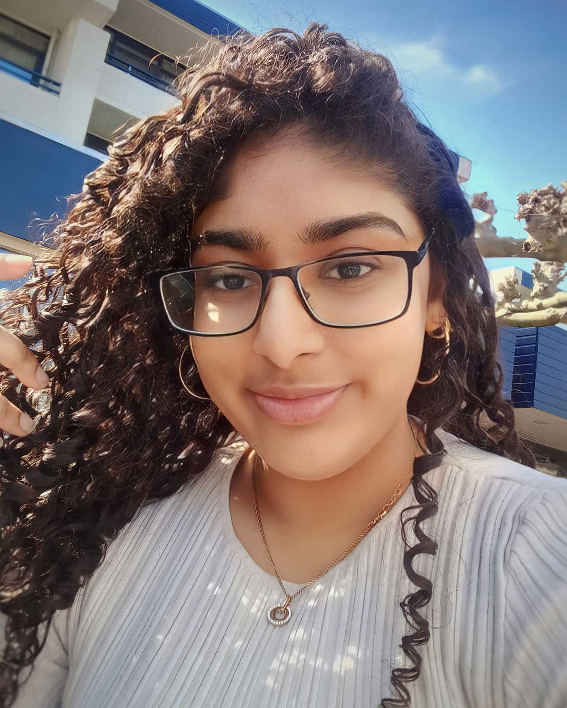

2+1=RODDELEN
Welkom bij 2 plus 1 = Roddelen, de podcast waar niets onbesproken blijft!
Elke week duiken we in een nieuw verhaal dat we voor onze luisteraars ontleden en over analyseren met een humoristische tone of voice.
Iedereen houdt stiekem van sappige verhalen, vooral als je een kijkje kunt nemen in het leven van iemand anders en daar is 2 plus 1 = Roddelen voor.
Wij zijn niet bang om taboes te bespreken.
Wil jij een verhaal met ons delen? Stuur ons dan een DM, want al onze social media-kanalen staan open!
Bedrijfsmissie: Bij 2 plus 1 = Roddelen is het onze missie om luisteraars te laten zien dat het oké is om af en toe om jezelf te lachen.
Daarom plagen de hosts de hoofdrolspelers in de verhalen op een luchtige manier, zodat er een vermakelijke sfeer ontstaat.
Met onze scherpe en humoristische kijk op de wereld van roddels streven wij ernaar om onze luisteraars een onvergetelijke luisterervaring te bieden
WIE ZIJN WIJ ?
Indian Chat GPT
Alisha is de creatieveling van het 2 plus 1 = Roddelen-team. Als student aan de HvA is ze altijd bezig met het vinden van nieuwe manieren om haar passie voor tekenen en vormgeving tot leven te brengen. Hoewel ze haar dagen het liefst doorbrengt met het creëren van kunst, droomt ze vaak van een relaxed leven met genoeg geld. Ondanks haar slaapgebrek blijft ze scherp tijdens de afleveringen, met haar motto: 'Alles komt goed, zolang je maar tijd hebt om te dromen en te slapen....
Gekweld door zijn Brein
Ali is de derde host van 2 plus 1 = Roddelen en brengt niet alleen een scherp oog voor design, maar ook een flinke dosis humor naar de show. Zijn kracht ligt in zijn komische timing.
Met zijn grappige persoonlijkheid weet hij de show altijd levendig te houden en biedt hij de mannelijke luisteraars een stem in de dynamiek met twee vrouwelijke hosts.
Ali is bovendien een kattenliefhebber en droomt ervan om een blijvende indruk achter te laten op de wereld
De Thee Schenker
Melisa is een van de hosts van 2 plus 1 = Roddelen en de drijvende kracht achter het cureren van de verhalen. Ze wordt gedreven door haar passie voor verhalen en haar nieuwsgierigheid naar wat er speelt in de wereld. Altijd op de hoogte van de laatste roddels en interessante onderwerpen, zorgt ze ervoor dat er wekelijks wordt gelachen tijdens de podcast. Wat begon als een spontaan idee, is inmiddels uitgegroeid tot een kleinschalige maar succesvolle podcast, waar ze mensen helpt en vermaakt met een scherp oog voor detail.
Copyright
Copyright © [2024] 2+1=Roddelen. Alle rechten voorbehouden. De inhoud van de podcast "2+1=Roddelen", inclusief maar niet beperkt tot audio, teksten, afbeeldingen, logo's, en andere materialen die worden gepresenteerd in de afleveringen en op alle platforms van de podcast, is auteursrechtelijk beschermd. De reproductie, distributie, bewerking of andere vormen van gebruik van de inhoud zonder voorafgaande schriftelijke toestemming van de makers is strikt verboden en kan leiden tot juridische stappen. Voor toestemming of andere vragen over het gebruik van de inhoud, neem contact op met ons via de "Contact" pagina.
TLDR: Copyright © [2024] 2+1=Roddelen. Alle rechten voorbehouden. De inhoud van de podcast "2+1=Roddelen is auteursrechtelijk beschermd. Reproductie, distributie, bewerking of andere vormen van gebruik van de inhoud schriftelijke toestemming van de makers is strikt verboden.
Disclaimers
Je gaat 2 + 1 idioten tegemoet of
De meningen en uitspraken die worden gedeeld in de podcast 2+1=Roddelen zijn uitsluitend die van de hosts en eventuele gasten.
Deze reflecteren niet noodzakelijkerwijs de standpunten van onze werkgevers, sponsors, of andere betrokkenen.
De podcast is bedoeld voor entertainment doeleinden en moet niet worden opgevat als professioneel advies van welke aard dan ook.
Hoewel we streven naar nauwkeurigheid, kunnen sommige informatie en details onjuist, verouderd of onvolledig zijn.
Wij zijn niet verantwoordelijk voor enige fouten, weglatingen of de gevolgen van het gebruik van de informatie die in deze podcast wordt gedeeld.
Luisteraars worden aangemoedigd om zelf onderzoek te doen en zich bewust te zijn van de feitelijke juistheid van besproken onderwerpen.
Eventuele overeenkomsten met echte personen of gebeurtenissen zijn puur toevallig.
Voor vragen of opmerkingen over de inhoud kunt u contact met ons opnemen via onze "Contact" pagina.
TLDR: De podcast is bedoeld voor entertainment doeleinden en moet niet worden opgevat als professioneel advies van welke aard dan ook. De meningen en uitspraken die worden gedeeld in de podcast 2+1=Roddelen zijn uitsluitend die van de hosts en eventuele gasten. Hoewel we streven naar nauwkeurigheid, kunnen sommige informatie en details onjuist, verouderd of onvolledig zijn.